[CMDSEQ_B] Command sequence for binary
Function block CMDSEQ_B commands the switch-on and switch-off sequence of the plant components.
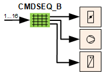
CMDSEQ_B receives the desired operating mode and commands the required plant components accordingly.
CMDSEQ_B determines the switch-on and switch-off sequence of interconnected plant components and the start and stop mode, e.g. delay, operating feedback, or timeout.
CMDSEQ_B can command a plant component based on the feedback from another plant component.
CMDSEQ_B receives the desired, automatic plant operating mode 1...16 at input [ValPgm]. It can, for example, be determined via a plant switch, manual switch, or scheduler.
CMDSEQ_B supports up to 16 freely programmable plant operating modes.
CMDSEQ_B can command up to 16 plant components via the outputs [Cmd1]...[Cmd16].
Each plant operating mode can determine the plant components to be switched on and off, their sequence of the same, and which start and stop mode (e.g. delay, feedback, or timeout) to consider.
Switching on and off each subsequent plant component in the sequence can be made contingent on operating feedback from one or more plant components. To this end, the state signal of the output block is returned to the desired input from CMDSEQ_B.
The following start and stop modes are available to switch on and off each plant component:
- Immediate
- Delay
- Feedback or timeout
- Feedback message
- Feedback and delay
- Grouping with next
The signal of an exception mode, e.g. the result of an active fire detector, can be interconnected to input [RpdOff] of CMDSEQ_B. CMDSEQ_B switches all plant components off in the event of an active exception mode. The output blocks for the connected plant components are then controlled directly by the exception mode.
Normal mode and exception mode with CMDSEQ_B
In normal mode, CMDSEQ_B is controlled by the operating mode received at input [ValPgm]. CMDSEQ_B releases the connected plant components as per the defined criteria.
Signals for exception mode (emergency mode or protection, e.g. from a fire detector) can be connected on input [RpdOff] of the CMDSEQ_B. It results in a rapid shut down of all connected plant components.
Followed by the exception mode directly controlling output blocks [CMD_A], [CMD_B] and [CMD_M] of the plant components.
An active, local exception mode acts on specific output blocks, but can also be returned to the general exception mode.
Where only a specific output block is affected, normal mode continues to operate via CMDSEQ_B.
Where returned to the general exception mode, the rapid shutdown of the connected plant components and output blocks are controlled directly as per the priorities of the local and the general exception mode.
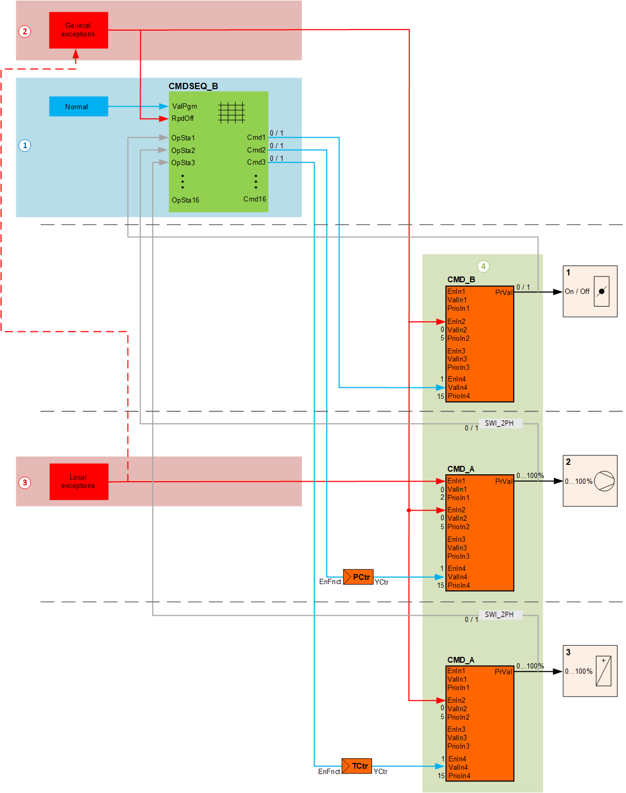
① Normal mode
② General exception mode
③ Local exception mode
④ Output blocks
Pins and assignment in CMDSEQ_B
Pins for function block CMDSEQ_B are assigned to the internal matrix as follows:
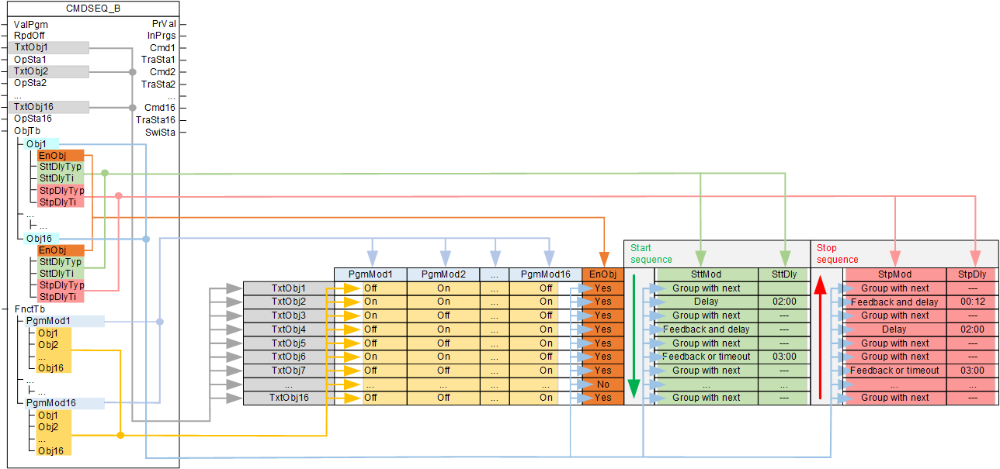
The table is comprised of three areas:
- Names
- Function table [FnctTb]
- Object table [ObjTb]
Names
Up to 16 plant components can be entered in the table in the desired switch-on sequence. The associated names can be entered in the inputs [TxtObj1] to [TxtObj16].
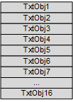
Entry mask in the programming editor
Names can be entered in the programming editor under "Properties" of the function block in the following entry mask:
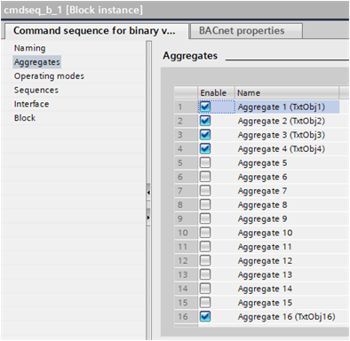
Defines under "Enable" [EnObj] where each plant component is enabled or disabled. Disabled plant components are skipped in the start or stop sequence.
Example: Ventilation plant
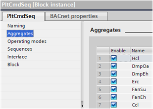
Function table
In the function table [FnctTb], [PrgMod1] to [PrgMod16] defines for each plant operating mode whether the included plant components [TxtObj1] to [TxtObj16] operate.
The desired component operating modes 'On' / 'Off' (Binary 0,1) in [Obj1] to [Obj16] is entered for each plant operating mode.
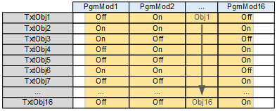
Entry mask in the programming editor
Component operating modes 'On' / 'Off' (Binary 0,1) can be entered in the programming editor under "Properties" of the function block in the following entry mask:
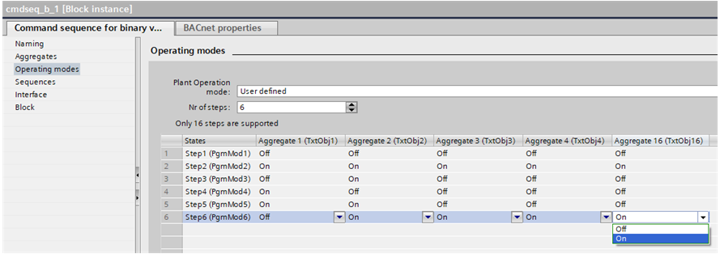
Example: Ventilation plant
'Off, On' (multistate 1, 2) was selected for the plant operating mode.
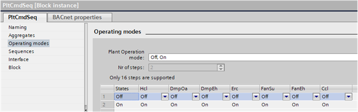
Object table
In the object table [ObjTb] the up to 16 plant components are entered as objects [Obj1] to [Obj16].
[EnObj] defines where each plant components is enabled or disabled. Disabled plant components are skipped in the start or stop sequence.
In addition, the conditions are entered for each plant component that must be fulfilled in order to command the next plant component.
The condition can be separately defined for the start and stop sequence.
A condition consist of [SttMod] start mode or [StpMod] stop mode and any applicable [SttDly] start delay or [StpDly] stop delay.
The conditions are only considered each time at the moment they are current per the start or stop sequence. For example, if a feedback requested from an earlier, processed condition is no longer pending in the start or stop sequence, it has no impact on the remaining operation of the sequence.
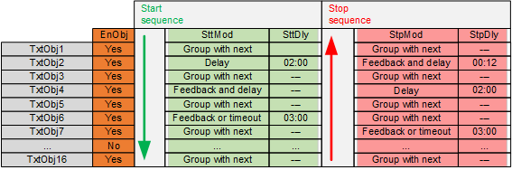
Entry mask in the programming editor
The conditions for the start and stop sequence can be entered in the programming logic under "Properties" of the function block in the following entry mask:
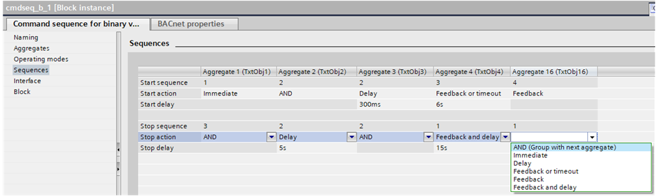
The setting for [EnObj] occurs in the entry mask for the names.
Example: Ventilation plant
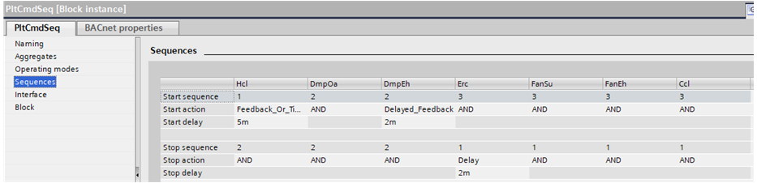
Start mode and stop mode
[SttMod] Start mode and [StpMod] stop mode defines the condition to command the next plant component in the start or stop sequence:
- Grouping with next
- Immediate
- Delay
- Feedback or timeout
- Feedback message
- Feedback and delay
Grouping with next
The plant component is grouped with the next plant component in the start or stop sequence. The conditions applicable to the last object of a group in the sequence apply to the entire group.
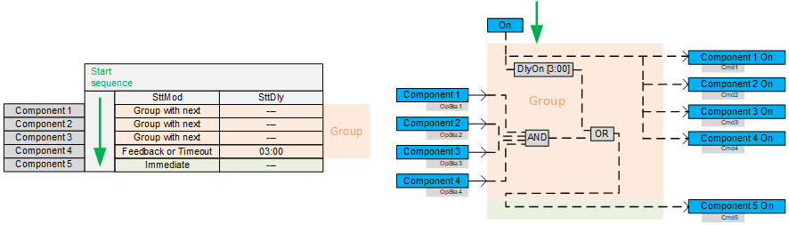
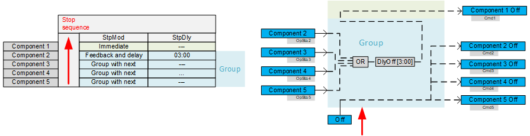
Immediate
The next plant component is commanded immediately.
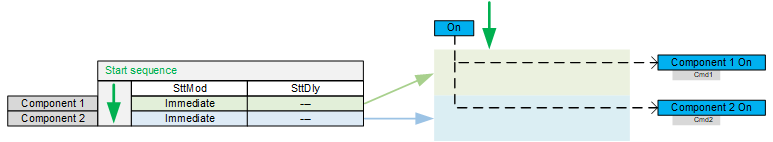
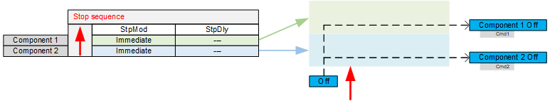
Delay
Command after the set delay expires.
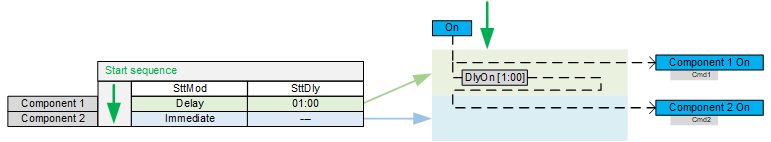
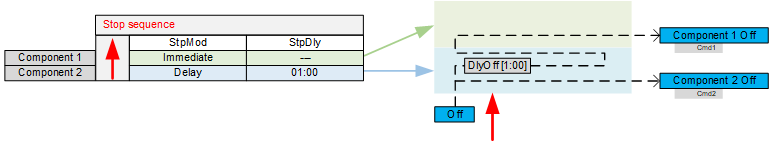
Feedback or timeout
Command after feedback, at the latest however after the set timeout expires.
The next plant component is immediately commanded as soon as the requested feedback arrives.
If no feedback arrives, the next plant component is nevertheless commanded after the set timeout expires.
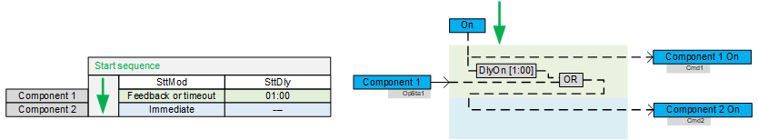
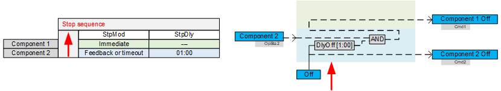
Feedback message
Command after feedback. The next plant component is not commanded without feedback.
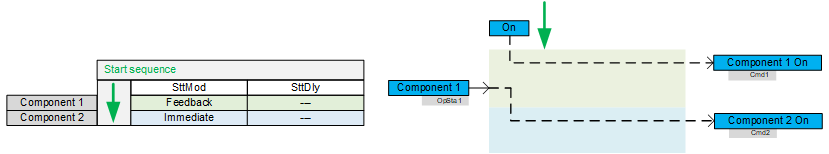
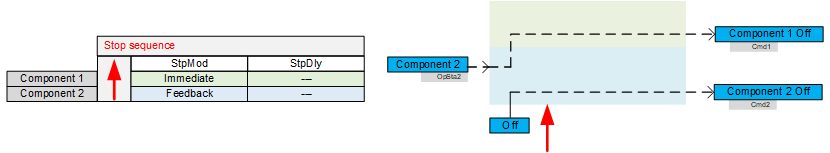
Feedback and delay
Command after feedback and expiration of the set delay. The next plant component is not commanded without feedback.
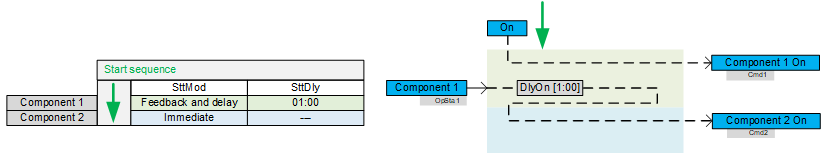
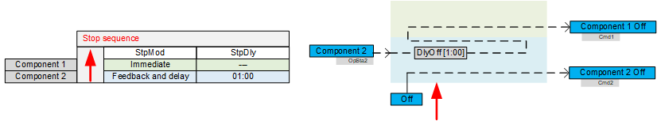
Start and stop delay
A [SttDly] start delay (mm:ss) or [StpDly] stop delay must be set for each start mode or stop mode with delay or timeout.
Locks
The enable of the next plant component in the switch-on and off sequence can be made contingent on feedback from the prior plant component or feedback from another plant component. This may occur via CMDSEQ_B or via corresponding interconnection of the outputs.
When locking via CMDSEQ_B, each condition for commanding plant components is considered at the moment it takes effect as per the start sequence or stop sequence. For example, if a feedback requested from an earlier, processed condition is no longer pending in the start or stop sequence, it has no impact on the remaining operation of the sequence.
Locking with continuous monitoring of feedback and consideration of priorities must occur via the corresponding interconnection of the outputs.
Switch-on workflow (start sequence)
If a specific operating mode is requested with a change of value at input [ValPgm], the required plant components are switched-on with the start sequence.
The sequence of the connected plant components (from top to bottom) in CMDSEQ_B determines the sequence for switching on of individual plant components.
The plant component on the first output [Cmd1] is switched on first; followed by the second output [Cmd2] and so on until the last output (max. 16).
The conditions of the prior component must be met before the plant component from the next output is switched on.
The switch-on conditions are defined in the object table [ObjTb] using the settings under [SttMod] and [SttDly].
Example: Switching on the plant with delays
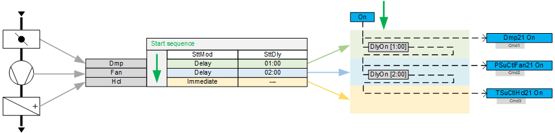
- The supply air damper opens after a change of value on the input [ValPgm] (switch on).
- The fan is switched on after a delay of one minute.
- The heating coil is switched on after a delay of two minutes.
Switch-off workflow (stop sequence)
If the operating mode changes or the plant is switched off with a change of value at input [ValPgm], the plant components that are no longer needed are switched off with the stop sequence. The following describes switching off the plant.
The sequence of the connected plant components (from bottom to top) in CMDSEQ_B determines the sequence for switching off of individual plant components.
The plant component on the last output is switched off first; followed by the second to last output and so on until the first output (max. 16).
The conditions of the prior component must be met before the plant component from the next output is switched off.
The conditions for switch-off are defined in the object table [ObjTb] using the settings under [StpMod] and [StpDly].
Example: Switching off the plant with delays
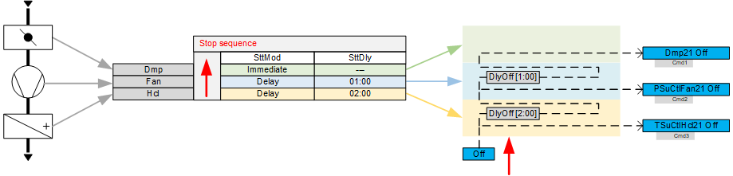
- The heating coil is switched off after a change of value on the input [ValPgm] (switch off).
- The fan is switched off after a delay of two minutes.
- The supply air damper closes after a delay of one minute.
Changeover of operating modes
If the operating mode is changed over with a change of value at input [ValPgm], CMDSEQ_B first processes the stop sequence and then the start sequence.
In the stop sequence, plant components that are no longer needed are switched off first. This is followed by switching on any additionally plant components needed in the start sequence.
The plant components needed for both operating modes continue to operate without interruption during the stop and start sequence.
As a consequence, only the stop modes [StpMod] and start modes [SttMod] (e.g. delays or feedback) of plant components are considered that are no longer pending or are new.
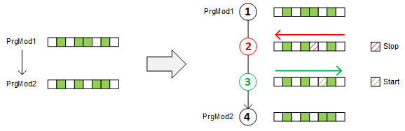
① Operating mode prior to changeover [PgmMod1].
② In the stop sequence, plant components that are no longer needed are switched off.
③ In the start sequence, additionally required plant components are switched on.
④ Operating mode after changeover [PrgMod2].
Grouping
Plant components can be grouped and switched together. Feedbacks from individual group elements are also monitored as a group.
Grouping is based on the settings for both start mode [SttMod] and stop mode [StpMod].
A group begins each time with the first setting "Group with next" in column [SttMod] or [StpMod] and ends with the next deviating setting.
Groupings within start and stop sequences are independent.
Switch-on process with groups
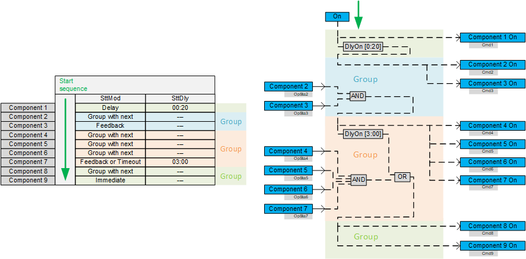
Switch-off process with groups
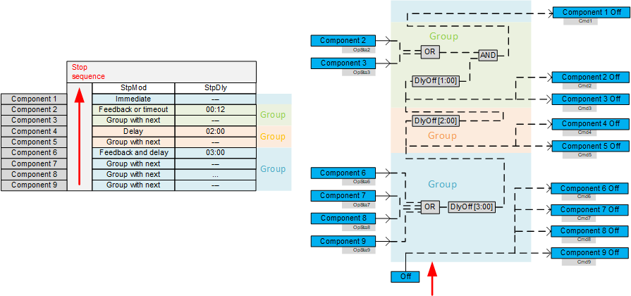
Principles of control logic
The following principles are important for understanding internal control logic:
- A plant component connected to output [Cmd1] to [Cmd16] is switched on with signal 1 and switched off with signal 0.
- Feedback from a plant component connected to input [OpSta1] to [OpSta16] means, with signal 1, that the plant component is switched on and, with signal 0, that it is switched off.
- A switch-on delay "DlyOn" requires signal 1 on the input to start the internal timer. It provides value 1 after the delay expires.
- A switch-off delay 'DlyOff' requires value 0 on the input to start the internal timer. It provides value 0 after the delay expires.
- "AND" provides value 1, if all connected components have the value 1.
- 'OR' provides signal 1, as soon as one or more connected components have the value 1. Additional connected plant components may be 0.
The switch-on process is easy to track as illustrated in the following example based on a timeout:
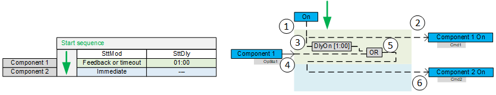
① CMDSEQ_B receives a new operating mode that wants to switch on the plant.
② Plant component 1 immediately receives the switch-on command with value 1.
③ DlyOn receives value 1 and the entered time begins to run. It provides value 1 after expiration of the time.
④ The feedback from the first plant component is received at input [OpSta 1]. The value can be 0 or 1.
⑤ The logic block 'OR' provides the value 1, if either the feedback occurs with 1 or the DelayOn expires and sends 1 or if both values are 1. Otherwise it provides value 0.
⑥ Plant component 2 switches on, if it receives signal 1 from logic block OR. Otherwise it remains switched off.
The following example illustrates the switch-off process based on a timeout:
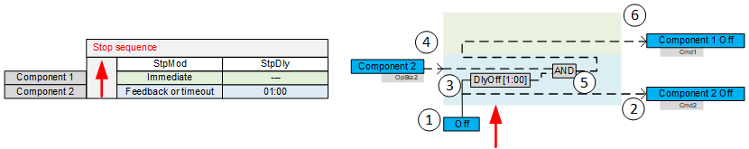
① CMDSEQ_B receives a new operating mode that wants to switch off the plant.
② Plant component 2 immediately receives the switch-off command with value 0.
③ DlyOff receives value 0 and the entered time begins to run. It provides value 0 after expiration of the time.
④ The feedback from plant component 2 is received at input [OpSta 2]. The value can be 0 or 1.
⑤ The logic block 'AND' provides the value 0, if either the feedback occurs with 0 or the DelayOff expires and sends 0 or if both values are 0. Otherwise it provides value 1.
⑥ Plant component 1 switches off, if it receives signal 0 from logic block 'AND'. Otherwise it remains switched on.
Input | Description | Data type | Default value |
|---|---|---|---|
|
ValPgm | Program value Receives the request for the desired plant operating mode. | Integer | 1...16 |
1: Plant operating mode 1 The enumeration must be configured. Else, only values are displayed. | |||
RpdOff | Rapid off Requests a rapid plant shutdown. | Boolean | 0 |
0 - No rapid shutdown requests. The plant components are controlled as per the value at [ValPgm]. | |||
TxtObj1...TxtObj16 | Text for object 1Text for object 16 Name of the commanded plant component | String | '' |
OpSta1…OpSta16 | Operating state 1...Operating state 16 Receives the operating state of a plant component. | Boolean | 0 |
0 - The plant component is switched off. | |||
ObjTb | Object table The object table defines the conditions for switching to the next step in the start or stop sequence. | Structure | - |
The condition can be defined for each object (plant component) to allow commanding of the next object in the start or stop sequence. Obj1...16: Plant component 1...16 Each object has the following settings: Enable EnObj: Each object is enabled or disabled. Disabled objects are skipped in the start or stop sequence. Switch-on conditions (start sequence): SttMod: Start mode
SttDly: Start delay or timeout Switch-off conditions (stop sequence): StpMod: Stop mode
StpDly: Stop delay or timeout | |||
FnctTb | Function table Defines the desired operating state of all plant components (Obj1...16) for each plant operating mode (PrmMode1...16). | Structure | - |
Up to 16 plant operating modes (PrmMod1...16) can be defined. Each plant operating mode can include up to 16 plant components (Obj1...Obj16). Settings Obj1...Obj16 can define the plant components that can be commanded in the corresponding plant operating mode: 0: Plant component is not commanded in this plant operating mode. | |||
Output | Description | Data type | Default value |
|---|---|---|---|
PrVal | Present value Provides the present plant operating mode from CMDSEQ_B. | Integer |
|
1: A rapid shutdown is triggered via input [RpdOff]. 2...17: Mode as per plant operating mode 1...16 | |||
InPrgs | In progress Displays an initiated change to plant state, e.g. plant operating mode. | Boolean | 0 |
A start and stop procedure is performed. The actual change of state can be delayed, e.g. as the result of an active delay or pending feedback. 0 - No change in plant state | |||
Cmd1...Cmd16 | Command 1...Command 16 Commands the connected plant components as per the active plant operating mode. | Boolean | 0 |
0 - Switched off | |||
TraSta1...TraSta16 | Transient state 1...Transient state 16 Displays the initiated change in state of the output [Cmd1]...[Cmd16]. | Boolean | 0 |
The actual change of state can be delayed, e.g. as the result of an active delay or pending feedback. 0 - No change of state for the commanded plant component | |||
SwiSta | Switching state Supplies the present switching state of the plant. | Integer |
|
1: The plant operates per the present operating mode. | |||